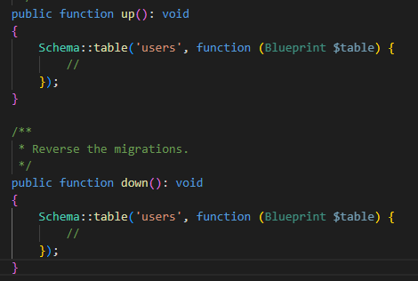

Migrazioak
Zer dira migrazioak?
Migrazioak Laravel-ek datu-basearen bertsio-kontrola eramateko erabiltzen duen sistema dira.
Horri esker, datu-basean egindako aldaketak dokumentatuta eta kontrolatuta geratzen dira, beste pertsonek ere exekutatu ahal izateko edo arazoren bat egonez gero, aurreko egoerara itzultzeko aukera izateko.
Migrazioak datu basean ditugun taulak kudeatzeko ere erabili ditzakegu, hau da, taula berriak sortzeko, taularen eremuren bat aldatu ahal izateko edota ezabatu ahal izateko.
Migrazioak database>migrations karpetan gordeko dira.
up() - down() metodoak
Migrazio bakoitzak php baten egongo da, eta horretan ikusi dezakegunez Migration klase bat dago 2 metodo dituenak: up() eta down(). Migrazioa exekutatzerakoan up() metodoari deituko dio, eta reset edo refresh edo horrelakoetan, down() metodoari deituko zaio.
- up(): datu-basean aldaketak aplikatzeko erabiltzen da (taula bat sortu, zutabe bat gehitu...).
- down(): up() metodoak egindako aldaketak desegiteko erabiltzen da.
Migrazioekin lan egiteko, artisanek baditu hainbat metodo: make:migration, migrate:refresh, migrate:reset eta migrate:rollback
make:migration
Migrazio berri bat sortzeko erabiltzen da.
php artisan make:migration create_pupils_table
php artisan migrate
make:migration:migrazioaren PHP fitxategia sortzen du, baina ez du datu-basea aldatzen.migrate:oraindik exekutatu gabe dauden migrazioak exekutatzen ditu eta datu-basean aldaketak aplikatzen ditu.
Sortuta dauden migrazio guztiak exekutatzen ditu. Migrazio hauek sortze dataren arabera exekutatuko dira, hau da, lehenengo sortutakoa izango da lehena exekutatuko dena.
Note
Laravel-ek bakarrik exekutatu gabe dauden migrazioak exekutatzen ditu beti, automatikoki. Ez du berriro exekutatuko jada exekutatu direnak (migrations taulan apuntatuta daudelako).
php artisan migrate
migrate:rollback
Azken batch edo "lote"-an exekutatu diren migrazioak desegiten ditu.
Hau da, azken exekuzioan egin ziren migrazio guztiak atzera botatzen ditu (down() exekutatuz).
Batch-a migrations taulako batch eremuan ikus daiteke.
php artisan migrate:rollback
migrate:reset
Migrazio denak desegiten ditu (down() deituz), ez bakarrik azken lotea.
php artisan migrate:reset
migrate:refresh
Lehenik reset egingo du (down() metodo guztiak), eta ondoren berriro exekutatuko ditu migrazio guztiak (up() metodo guztiak). Hau oso erabilgarria da garapenean datu-basea "garbi" izateko.
php artisan migrate:refresh
migrate:fresh
Taula guztiak ezabatzen ditu FIZIKOKI, eta gero up() metodo guztiak exekutatzen ditu.
Ez du down() metodoa erabiltzen, eta horregatik arriskutsuagoa da.
Warning
migrate:fresh-ek datu-baseko taula guztiak ezabatzen ditu, ez bakarrik migrazioek sortutakoak. Beraz, datu basean ditugun datuak galdu daitezke.
migrate:status
Komando honek migrazio bakoitzaren egoera kontsultatzeko balio du, hau da, migrazioak dagoeneko exekutatu diren ala oraindik exekutatzeko dauden ikusteko.
php artisan migrate:status
Exekutatzean, Laravel-ek migrazio guztien zerrenda erakutsiko digu, bakoitzaren egoerarekin:
- Ran: migrazioa dagoeneko exekutatu da, eta
migrationstaulan erregistratuta dago. - Pending: migrazioa sortuta dago, baina oraindik ez da exekutatu.
Gainera, exekutatutako migrazioen batch edo lote-zenbakia ere ikus dezakegu. Zenbaki horrek migrazioa zein exekuzio-lotetan aplikatu zen adierazten du.
Tip
Komando hau oso erabilgarria da migrazio berri bat sortu ondoren, php artisan migrate exekutatu dugun ala ez egiaztatzeko.
Kontuan izan migrate:status komandoak ez duela datu-basean aldaketarik egiten; migrazioen egoerari buruzko informazioa soilik erakusten du.
Migrazioen komandoen laburpena
Laravel-ek Artisan komandoak eskaintzen ditu migrazioak sortzeko, exekutatzeko eta desegiteko.
Hurrengo taulan komando nagusiak eta bakoitzaren funtzioa laburbiltzen dira:
| Komandoa | Zer egiten du? | Datuak gal daitezke? |
|---|---|---|
make:migration |
Migrazio-fitxategi berri bat sortzen du. | Ez |
migrate |
Exekutatu gabe dauden migrazioak exekutatzen ditu. | Aldaketaren arabera |
migrate:status |
Migrazio bakoitza exekutatuta dagoen ala ez erakusten du. | Ez |
migrate:rollback |
Azken lotean (batch) exekutatutako migrazioak desegiten ditu. | Bai |
migrate:reset |
Exekutatutako migrazio guztiak desegiten ditu. | Bai |
migrate:refresh |
Migrazio guztiak desegin eta berriro exekutatzen ditu. | Bai |
migrate:fresh |
Datu-baseko taula guztiak ezabatu eta migrazio guztiak berriro exekutatzen ditu. | Bai |
Kontuz datuekin!
rollback, reset, refresh eta fresh komandoek datuak ezabatzea eragin dezakete.
Bereziki, refresh eta fresh komandoak garapen-inguruneetan erabiltzen dira, datu-basea berriro sortzeko. Ez dira erabili behar datuak mantendu behar baditugu.
Zein da refresh eta fresh arteko desberdintasuna?
migrate:refresh: migrazioak desegiten ditudown()metodoak erabiliz, eta ondoren berriro exekutatzen dituup()metodoak.migrate:fresh: datu-baseko taula guztiak zuzenean ezabatzen ditu,down()metodoak erabili gabe, eta ondoren migrazio guztiak exekutatzen ditu.
Beraz, fresh erabilgarria izan daiteke migrazioetako down() metodoak behar bezala definituta ez daudenean ere.
Taula berri bat sortu migrazio bat erabiliz
Taula berri bat sortzeko, migrazio berri bat sortuko genuke, hurrengo instrukzioa erabiliz:
php artisan make:migration create_posts_table
Note
Migrazio bat sortzean, komeni da izenak migrazio horrek zer egingo duen adieraztea. Laravel-en, taula berri bat sortzeko, normalean egitura hau erabiltzen da:
create_izena_table
create: taula berri bat sortuko dugula adierazten du.posts: sortuko dugun taularen izena da. Konbentzioz, minuskulaz eta pluralean idazten da.table: migrazioak datu-baseko taula bati eragingo diola adierazten du.
Beraz, create_posts_table izenak posts izeneko taula bat sortuko dugula adierazten du.
Behin fitxategia sortuta dugunean, klase berri bat sortu digutela ikusi dezakegu, horren ostean up() eta down() metodoak aldatuko ditugu:
public function up(): void{
Schema::create('posts', function (Blueprint $table) {
$table->id();
$table->string('title');
$table->text('content');
$table->timestamps();
});
}
// Reverse the migrations.
public function down(): void{
Schema::dropIfExists('posts');
}
Zelan egin taula baten eremu aldaketa taulak datuak izanda?
Taula baten eremuak aldatzeko, migrazioa sortuko genuke ere.
Hau horrela egingo genuke datu basean datuak izanez gero, ez izatekotan zuzenean create migrazioa aldatuko genuke eta refresh batekin exekutatu guztiak.
Adibidez, taula baten eremu berri bat sartzeko, migrazio berri bat sortu beharko genuke. Lehen esan dugun moduan, migrazioaren izena edozein izan daiteke, baina "konbentzioz" horrela idatziko genuke:
php artisan make:migration add_avatar_to_users_table

Sortuko zaigu migrazio dokumentu bat aurreko metodoekin, beraz hemen eremua gehituko dugu create kasuan moduan.
Warning
Taulan datuak egongo direnez, eremua sortzerakoan jarri behar dugu null izan daitekeela, akatsarik ez emateko, edo balio lehenetsi bat. Hau up() metodoan idatziko dugu.
public function up(): void
{
Schema::table('users', function (Blueprint $table) {
$table->string('avatar')->nullable();
});
}
public function down(): void
{
Schema::table('users', function (Blueprint $table) {
$table->dropColumn('avatar');
});
}
Migrazio hau exekutatzerakoan, avatar zutabea gehitu du, baina taularen bukaeran. Horrela nahi ez izatekotan, rollback egingo dugu eta gero aldaketa migrazioan
php artisan migrate
Demagun email eremuaren ostean jarri nahi dugula:
$table->string('avatar')->nullable()->after('email');
Zutabe mota ohikoenak
Migrazioetan, taula bat sortzean edo aldatzean, zutabe bakoitzean zer motatako datuak gordeko diren zehaztu behar dugu.
Laravel-ek hainbat metodo eskaintzen ditu zutabeak definitzeko. Hauek dira ohikoenetako batzuk:
| Metodoa | Deskribapena | Adibidea |
|---|---|---|
string() |
Testu laburra (lehenespenez, gehienez 255 karaktere). | $table->string('name'); |
text() |
Testu luzea gordetzeko. | $table->text('description'); |
integer() |
Zenbaki osoak gordetzeko. | $table->integer('age'); |
boolean() |
Egia/gezurra motako balioak gordetzeko. | $table->boolean('active'); |
date() |
Datak gordetzeko, ordurik gabe. | $table->date('birth_date'); |
decimal() |
Zenbaki hamartarrak gordetzeko, zehaztasun finkoarekin. | $table->decimal('price', 8, 2); |
foreignId() |
Beste taula bateko erregistro bati erreferentzia egiteko ID zutabe bat sortzen du. | $table->foreignId('user_id'); |
timestamps() |
created_at eta updated_at zutabeak sortzen ditu automatikoki. |
$table->timestamps(); |
Kontuan izan
decimal('price', 8, 2)erabilita, gehienez 8 digitu gordeko dira, horietatik 2 hamartarrak.foreignId()erabilita, ID zutabea sortzen da, baina atzerriko gakoaren murriztapena ez da automatikoki sortzen. Horretarako,constrained()erabil daiteke.timestamps()metodoak bi zutabe sortzen ditu, eta gero Eloquent-ek automatikoki kudeatu ditzake.
Zutabeen propietateak
Zutabe baten datu mota definitzeaz gain, propietate gehigarriak ere ezar ditzakegu.
Propietate horiek zutabeak zer balio onartzen dituen edo nola jokatuko duen zehazteko erabiltzen dira.
| Propietatea | Deskribapena |
|---|---|
nullable() |
Zutabeak NULL balioa onartzea ahalbidetzen du. |
default() |
Baliorik zehazten ez denean erabiliko den balio lehenetsia ezartzen du. |
unique() |
Zutabean balio errepikatuak egotea eragozten du, datu-baseko murriztapen baten bidez. |
Adibidea:
$table->string('email')->unique();
$table->boolean('active')->default(true);
$table->string('avatar')->nullable();
email: helbide elektronikoa ezin izango da errepikatu.active: baliorik adierazten ez bada, lehenespeneztrueizango da.avatar: erabiltzaileak ez badu irudirik, zutabeakNULLbalioa izan dezake.
Tip
Zutabe baten definizioan hainbat metodo kateatu ditzakegu:
$table->string('username', 50)->nullable()->unique();
Kasu honetan, username zutabeak gehienez 50 karaktere izango ditu, NULL balioa onartuko du eta NULL ez diren balioak ezin izango dira errepikatu.
Dokumentazio ofiziala hurrengo esteka honetan duzue: https://laravel.com/framework/docs/13.x/migrations
Hurrengoa: Eloquent